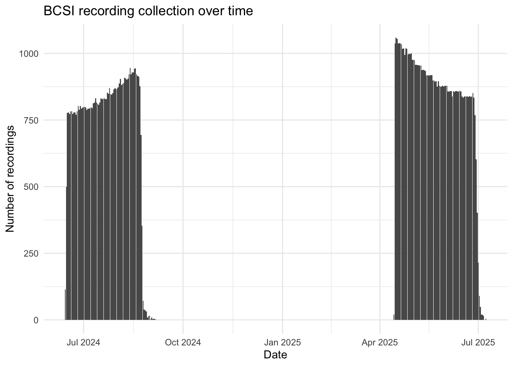

Report on the use of passive acoustic monitoring for songbirds and seabirds in Lanz and Cox Pronvical Park, British Columbia
Note
This report is dynamically generated, meaning its results may evolve with the addition of new data or further analyses. For the most recent updates, refer to the publication date and feel free to reach out to the authors.
Abstract
Passive acoustic monitoring was conducted on Lanz and Cox Islands to characterize seabird and songbird communities across multiple breeding seasons prior to invasive mink and raccoon eradication. Autonomous Recording Units (ARUs; SM4) were deployed at 0 locations and analyzed using a combination of machine-learning algorithms and expert validation. This report summarizes species presence, temporal patterns of detection, and relative abundance for seabirds and songbirds, and provides spatial representations of detections across both islands. These results establish a pre-eradication baseline to support evaluation of seabird prospecting activity and future changes in songbird communities following invasive predator removal.
Land Acknowledgement
Introduction
Lanz and Cox Islands support important seabird and songbird habitats, yet populations have been negatively affected by the presence of invasive predators, including mink and raccoon. As part of a broader restoration initiative, passive acoustic monitoring was implemented to document avian community composition prior to eradication activities. Autonomous recording units (ARUs) were deployed across both islands over three breeding seasons to capture vocal activity of seabirds and songbirds. Acoustic data were processed using the WildTrax data management platform in combination with BirdNET and HawkEars machine-learning algorithms, with detections verified using expert review informed by prior experience in marine acoustic environments. This report presents the results of these analyses, including species detected, timing of detections, relative abundance metrics, and spatial patterns of occurrence. Together, these data provide a baseline against which post-eradication monitoring can be compared to assess project outcomes and ecological recovery.
Methods
Data collection
# A tibble: 9 × 6
species_id species_code species_common_name species_class species_order
<dbl> <chr> <chr> <chr> <chr>
1 2823 RHAU Rhinoceros Auklet AVES Charadriiformes
2 2146 COMU Common Murre AVES Charadriiformes
3 528 BFAL Black-footed Albatross AVES Procellariiformes
4 2756 MAMU Marbled Murrelet AVES Charadriiformes
5 1926 STAL Short-tailed Albatross AVES Procellariiformes
6 2043 TUPU Tufted Puffin AVES Charadriiformes
7 2362 PFSH Pink-footed Shearwater AVES Procellariiformes
8 2788 ANMU Ancient Murrelet AVES Charadriiformes
9 2799 CAAU Cassin's Auklet AVES Charadriiformes
# ℹ 1 more variable: species_scientific_name <chr># A tibble: 6 × 4
species_id included species_code species_common_name
<dbl> <lgl> <chr> <chr>
1 2756 TRUE MAMU Marbled Murrelet
2 2799 FALSE CAAU Cassin's Auklet
3 2043 FALSE TUPU Tufted Puffin
4 2146 FALSE COMU Common Murre
5 2788 FALSE ANMU Ancient Murrelet
6 2823 FALSE RHAU Rhinoceros Auklet bcsi_recs <- wt_get_sync("organization_recordings", organization = 5853)[1] "Calling... /bis/download-recordings-by-org-id"bcsi_recs |>
mutate(date = as.Date(recording_date_time)) |>
count(date) |>
ggplot(aes(x=date, y=n)) +
geom_bar(stat = "identity") +
labs(
x = "Date",
y = "Number of recordings",
title = "BCSI recording collection over time"
) +
theme_minimal()
noise_level_map <- c(
"Low" = 1,
"Medium" = 2,
"High" = 3,
"Extreme" = 4
)
noise_pattern_map <- c(
"Intermittent" = 2,
"Infrequently" = 1,
"Frequent" = 3,
"Constant" = 4
)
bcsi_noise <- bcsi[[3]] |>
separate_rows(task_noise, sep = "\\+") |>
separate(
task_noise,
into = c("noise_source", "noise_level", "noise_pattern"),
sep = "/",
fill = "right"
) |>
select(task_id, noise_source, noise_level, noise_pattern) |>
distinct() |>
filter(noise_source == "Ocean") |>
drop_na() |>
mutate(
noise_level_num = unname(noise_level_map[noise_level]),
noise_pattern_num = unname(noise_pattern_map[noise_pattern])
) Warning: Expected 3 pieces. Additional pieces discarded in 1 rows [58].bcsi_main_noise <- bcsi_main |>
inner_join(bcsi_noise, by = "task_id")
bcsi_richness <- bcsi_main_noise %>%
group_by(recording_id, noise_level, noise_level_num, noise_pattern_num) %>%
summarise(
richness = n_distinct(species_code[!is.na(species_code)]),
.groups = "drop"
) |>
mutate(noise_level = factor(
noise_level,
levels = c("Low", "Medium", "High", "Extreme"),
ordered = TRUE
))
ggplot(bcsi_richness, aes(factor(noise_level), richness)) +
geom_boxplot() +
labs(
x = "Noise level (ordinal)",
y = "Species richness per recording",
title = "Species richness vs noise level"
) +
theme_minimal()
bcsi_individuals <- bcsi_main_noise %>%
group_by(recording_id, noise_level, noise_level_num, noise_pattern_num, species_code) %>%
summarise(individuals = max(individual_order),
.groups = "drop"
) |>
mutate(individuals = case_when(is.na(individuals) ~ 0, TRUE ~ individuals)) |>
group_by(recording_id, noise_level, noise_level_num, noise_pattern_num) |>
summarise(n = sum(individuals)) |>
ungroup() |>
mutate(
noise_level = factor(
noise_level,
levels = c("Low", "Medium", "High", "Extreme"),
ordered = TRUE
)
)`summarise()` has grouped output by 'recording_id', 'noise_level',
'noise_level_num'. You can override using the `.groups` argument.ggplot(bcsi_individuals, aes(noise_level, n)) +
geom_boxplot() +
labs(
x = "Noise level",
y = "Individuals detected per recording",
title = "Individuals detected vs noise level"
) +
theme_minimal()
bcsi_seabirds <- wt_download_report(4069, 'ARU', c('main','ai'))
eval <- wt_evaluate_classifier(bcsi_seabirds, resolution = "recording", remove_species = TRUE, species = "MAMU")
wt_additional_species(bcsi_seabirds, remove_species = TRUE, threshold = 0.8, resolution = "task", format_to_tags = TRUE) |> view()Data management, processing and quality control
Recordings were clipped and organized to only include the 10-minute count. Before adopting WildTrax in 2021, processing analysts excluded the initial 20 seconds to 1.5 minutes of recordings to reduce human impact on detection probability, then logged the first detection time per species. Recordings are now uploaded as clean 10-minute files with the voice note and observer notes removed. In WildTrax, individuals were counted by users scanning both the spectrogram and listening to the audio output. Tags were then drawn to encompass the signal within the methods indicated in each project (see ?@tbl-transcriptions and ?@fig-acousticprocessing). Transcribers also had site photos available (see ?@fig-visitphotos) to optimize their species identification by having habitat context while processing.